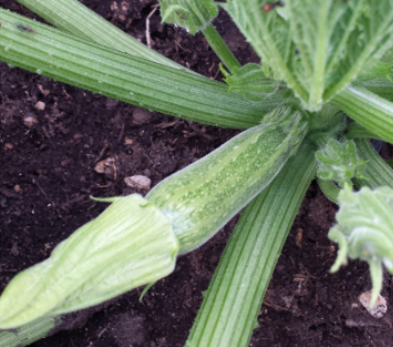

Zucchine

Coltivare in terreno molto ricco di materia organica e non coltivare dopo Solanacce o piante della stessa famiglia delle cucurbitacce.
- Varietà: Zucchina chiara di Faenza
- Periodo di semina: Marzo/Aprile
- Primo raccolto: Fine Aprile
- Ultimo raccolto: Fine Luglio
-
Raccolto
Dimensione Quantità Piccole ( 10cm) 16 Medie (11-16cm) 26 Grandi(>16cm) 9 51